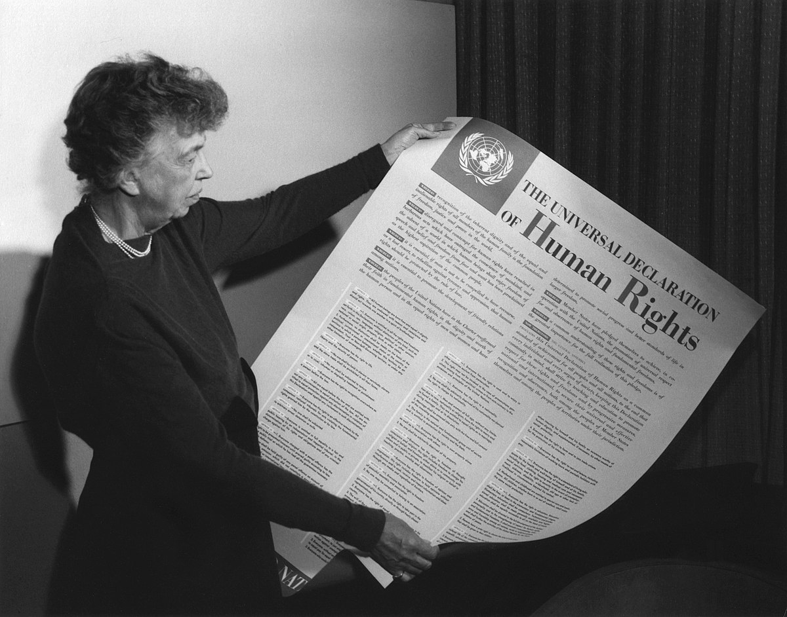

L’Educazione Civica è un percorso che sviluppa il senso critico, la consapevolezza dei diritti e dei doveri, il rispetto dell’ambiente e la partecipazione attiva alla vita democratica. In questa sezione presento i progetti che raccontano il mio impegno e il mio punto di vista su temi fondamentali per la nostra società.
I miei progetti
In questa sezione ho affrontato temi cruciali che toccano sia la storia che l'attualità. Esplora i miei lavori dedicati alla comprensione della guerra, alla memoria del 25 aprile e all'importanza fondamentale della sicurezza dei dati nel mondo digitale. Qui trovi le mie riflessioni e ricerche su questi argomenti.
25 Aprile
In occasione della Festa della Liberazione, ho realizzato un approfondimento multimediale che ripercorre il significato storico del 25 aprile e il valore della Resistenza italiana. Il progetto analizza le origini della ricorrenza, il ruolo dei partigiani e del Comitato di Liberazione Nazionale, e le modalità con cui oggi si celebra questa giornata in Italia. Una parte importante del lavoro è dedicata ai luoghi simbolici di Jesi legati alla Resistenza, come le lapidi commemorative e il Monumento ai Martiri di Monte Granale, per valorizzare la memoria locale e rafforzare il senso civico. Il progetto vuole essere un invito alla riflessione sul significato di libertà, democrazia e impegno civile.
Simulazione ONU: guerra, propaganda e consapevolezza digitale
Il progetto nasce da un’attività di gioco di ruolo proposta a scuola, in cui io, studentessa, ho interpretato il ruolo del leader di una grande nazione chiamata a intervenire a una conferenza ONU. In questa simulazione, si discuteva della possibile adesione a un conflitto in corso ai confini del continente. Ho scelto di sostenere con forza la posizione contraria alla guerra, argomentando il mio intervento con riferimenti storici, etici e di attualità. L'importanza, nel mondo digitale odierno, di sviluppare senso critico e competenze di cittadinanza digitale per riconoscere e contrastare la disinformazione e le narrazioni strategiche diffuse tramite social media e piattaforme online. Attraverso questo lavoro, ho riflettuto sull’urgenza di una società più consapevole, capace di distinguere tra verità e propaganda e sull'importanza di proteggere la pace e i diritti umani attraverso il pensiero critico e l'informazione corretta.
Protezione dati per un'etica digitale
Il progetto affronta due temi fondamentali dell’educazione civica digitale: la protezione dei dati personali e l’intelligenza artificiale. Attraverso il sito vengono illustrate le principali applicazioni dell’intelligenza artificiale in ambiti come medicina, sicurezza, trasporti, istruzione e industria. Viene inoltre proposta una riflessione sui rischi e sulle questioni etiche legate al suo utilizzo, come la perdita della privacy, la disinformazione e la sorveglianza. Il progetto ha l’obiettivo di sensibilizzare a un uso consapevole delle tecnologie, promuovendo una cittadinanza digitale responsabile.
I Diritti Umani in un mondo disuguale

Il progetto ha affrontato in chiave civica il tema dei diritti umani, analizzandone l’evoluzione storica, l’universalità e le sfide ancora aperte in un mondo caratterizzato da forti disuguaglianze. Attraverso la riflessione su testi, interviste e discussioni, è emerso come i diritti non siano sempre garantiti a tutti allo stesso modo, nonostante il loro carattere universale. Particolare attenzione è stata dedicata alla distinzione tra uguaglianza e sufficienza, evidenziando l'importanza di garantire a ogni individuo non solo il minimo necessario per una vita dignitosa, ma anche pari opportunità e riconoscimento. Si è discusso del ruolo del sistema giuridico come garante dei diritti fondamentali e della necessità di una nuova rivoluzione culturale capace di superare stereotipi, disuguaglianze economiche e discriminazioni. Il lavoro ha stimolato una presa di coscienza critica sugli ostacoli che ancora oggi impediscono una reale equità, sottolineando l’importanza della partecipazione attiva e informata dei cittadini per la tutela e l’attuazione dei diritti umani.
Dispositivi a basso consumo
Il progetto ha approfondito il tema del risparmio energetico, analizzando dispositivi a basso consumo come prese intelligenti, luci LED, valvole termostatiche e misuratori wireless. È emersa l’importanza di usare la tecnologia in modo consapevole per ridurre gli sprechi e tutelare l’ambiente. Sono state presentate anche buone pratiche digitali, come lo spin down degli hard disk e l’attivazione dello screensaver. Il lavoro ha evidenziato come ogni cittadino possa contribuire alla sostenibilità attraverso scelte responsabili nella vita quotidiana.